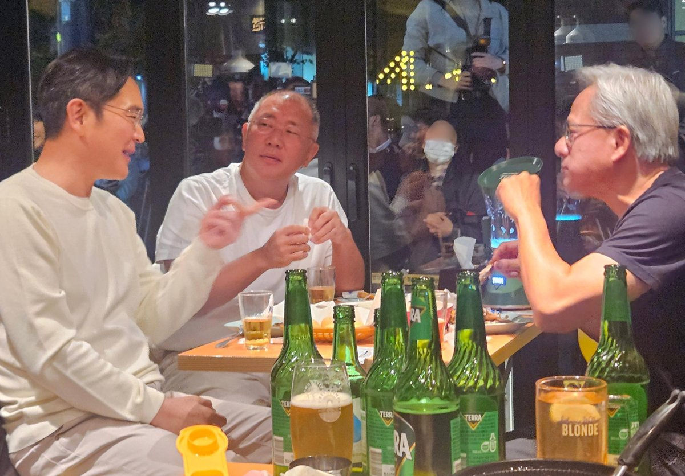
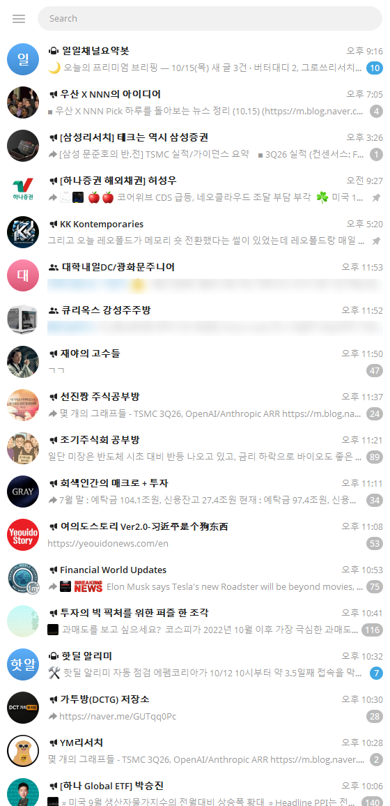
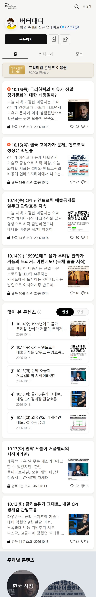

출근길
지하철에서 이미
시장 공부가
시작됩니다
- 구독 중인 텔레그램 채널 수십 곳에 밤사이 쌓인 메시지를 훑습니다
- 버터대디 네이버 프리미엄콘텐츠로 시장 흐름을 읽습니다
- 오늘 고객에게 보낼 시황 문자의 재료를 모읍니다
그런데 이 화면에는 비밀이 하나 있습니다. 4부에서 공개합니다.
직무특강 · 한국투자증권 PB 김다훈
저도 금융학회·투자동아리 없이 준비했습니다.
끝까지 들으시면, 스펙 없이 3일 만에 증거를 만든 방법을 알려 드립니다.
휴대폰으로 찍고 들어오세요
강의 자료 + 익명 질문
답하기 전에, 증권업이 뭘 하는 곳인지부터 짧게 보겠습니다.
위에서부터 차례로 내려가 보겠습니다. 증권사는 무엇을 하고, 영업은 무엇이고, PB는 하루 종일 무엇을 할까요?
증권사는 이 연결의 대가로 수수료와 이자, 운용 수익을 법니다.
같은 회사 안에서 40배.
평균도 높지만, 개인 차는 영업이 만듭니다.
출처: 각 사 2025년 사업보고서(DART) 「직원 등의 현황」 1인 평균 급여액(성과급 포함, 메리츠는 기재정정 보고서 기준 — 보도 기준에 따라 다를 수 있음) · 25곳 중 상위 9곳 표시, 모두 삼성전자보다 높음 · 89억은 같은 보고서 「임원의 보수 등」
대표들도 결정하고 조직을 이끕니다. 그런데 가장 큰 일 중 하나는 큰 딜을 따 오는 것입니다.
원금 손실 가능성까지 정확히 설명해야 관계가 오래갑니다. 불완전판매 사태 이후 설명 규정은 더 엄격해졌습니다.
제 경우 저녁을 고객과 먹는 일은 거의 없고, 점심은 한 달에 두세 번, 그마저도 대부분 제가 먼저 청합니다. 접대를 원한 고객은 없었습니다.
보상이 큰 자리일수록 일은 영업에 가까워집니다.

그냥 치킨 먹는 친목 자리였을까요?
다음 날, APEC 무대에서 빅딜 발표
2025년 10월 31일 경주 APEC CEO 서밋 기간, 엔비디아는 한국 정부·삼성·SK·현대차·네이버에 GPU 약 26만 장 공급을 발표했습니다. 금액은 비공개, 언론 추정 약 14조 원.
출처: 머니투데이·뉴스토마토 2025.10.31
← 7위가 오늘 이야기할 바로 그 직무, PB입니다. 상위권에는 개별 계약을 맺은 영업 전문직이 많아(공시 기준) 공채 신입과는 보상 구조가 다를 수 있습니다.
출처: 증권사 25곳 2025년 사업보고서(DART) 「임원의 보수 등」 직접 집계 · 대표이사·회장·부회장·고문 제외 · 회색 2명은 퇴직자로 보수 대부분이 퇴직금 · 위탁영업 = 고객 주문을 받아 주식을 사고파는 영업
고객의 자산을 회사로 모셔 오고, 빠져나간 자산을 되찾습니다.
고객에게 맞는 연금·펀드·채권 등을 권해 가입까지 이끕니다.
처음 만나는 개인과 법인을 고객으로 만듭니다.
텔레그램 채널과 네이버 프리미엄콘텐츠로 밤사이 시장 소식을 읽으며 출근합니다
실적 회의와 시황 회의. 오늘 고객에게 무슨 이야기를 할지 정합니다
고객 응대, 자산 섭외, 외부 영업까지 이어집니다
서류·녹취 점검, 일일보고, 고객 사후관리. 보통 18:00~18:30 퇴근
그런데 이 화면에는 비밀이 하나 있습니다. 4부에서 공개합니다.

텔레그램 캡처
네프콘 캡처기본급 + 성과급. 영업직 성과급은 내가 만든 수익에서 비용을 뺀 만큼에 지급률을 곱하는 곳이 많습니다. 숫자는 말로 드리겠습니다.
특별한 불이익은 없습니다. 다만 질타는 있습니다.
18:00~18:30 퇴근. 주말 출근은 한 번도 없었습니다. 주말 하루는 공부합니다(고객 주말 레터, 리포트, 요즘은 AI).
보통 거주지 기준입니다. 서울에서 일하다 갑자기 지방으로 가는 경우는 거의 없고, 서울 안에서 돕니다.
제도 도입 이후 처음으로 500조 원을 넘었습니다.
아직 대부분이 원리금보장형입니다. 어떻게 굴릴지 상담이 필요한 돈이 그만큼 많다는 뜻입니다.
법인에 직접 나가 퇴직연금을 상담하는 일, 신입도 배우며 고객을 만들 수 있는 통로입니다.
출처: 고용노동부·금융감독원 「2025년 퇴직연금 투자 백서」(2026.5.20 발표), 적립금 2024년 말 431.7조 → 2025년 말 501.4조, 원리금보장형 비중 75.4%
여러분이라면? "팔 수 있다"면 손을 들어 주세요.
가진 고객을 모두 다시 분류합니다. 이 상품이 맞을 투자 성향·목적·기간인지부터 봅니다.
고객이 가진 상품 중 환매하거나 교체할 만한 것이 있는지 고민합니다.
개인이든 법인이든 새 고객을 만들 길을 찾아 접촉합니다.
위험까지 설명하고 결정은 고객이. 일부러 권하지 않는 경우도 당연히 많습니다.
맞는 고객을 고르는 것, 그게 마음을 얻는 첫걸음입니다. (금융소비자보호법: 적합성·설명의무)
외향·내향은 체크 항목에 없습니다. 마음을 얻는 방법이 있는지가 중요합니다.
제가 내린 결론입니다. 금융권, 좋습니다.
전문성은 당연히 기본입니다. 하지만 영업력 하나로 정말 잘하는 분들도 많습니다. 업에 대한 관심과 함께 영업력을 어떻게 보여 줄지를 고민해 보세요.
마음을 얻을 수 있는 사람이라는 걸, 면접관에게 어떻게 증명할까요?
4년제 학사 이상(졸업예정 포함), 전공 무관. PB·IB·리서치 등 전 부문 모집.
채용설명회 참석자에게 서류전형 가점. 정보는 현장에서 얻습니다.
① 투자권유자문인력(고객에게 상품을 권하려면 필요) ② 여유 있으면 투자자산운용사 ③ 그 이상은 "증거 만들기"가 먼저
출처: 파이낸셜뉴스·한국경제 2026.9.16 · AI면접은 4부의 모의 면접 방법으로 연습할 수 있습니다 · 회사·시기마다 전형이 다르니 공고문을 꼭 확인하세요
투자권유자문인력은 기본. 있으면 좋지만, 그것만으로 차별화되지는 않습니다.
매일 시황 세 줄 요약. "요즘 시장"을 물으면 바로 답할 수 있게.
공대생이면 반도체 산업을, 고객 언어로 쉽게 설명할 수 있습니다.
사람을 만나 마음을 얻어 본 경험이 전공보다 강한 증거입니다.
전공은 출발점일 뿐, 증거는 지금부터 만들 수 있습니다.
먼저 규칙: 처음 보는 게스트 10명의 O/X 답이 정확히 5 대 5로 갈리는 12글자 이내 문장을 내면 1점
게스트의 이름, 옷차림, 생일 같은 이미 있는 정보를 알아내 문장을 만들었습니다.
정보가 정확하지 않거나 해석이 갈리면 실패했습니다.
추가 조사 10분 동안 게스트 5명에게만 자기 형의 이름을 알려 주고 손등을 맞댔습니다. 그리고 그 5명만 아는 문장을 냈습니다.
2라운드 5문제를 모두 성공, 메인매치 1위
학회·동아리가 있다면: 리포트 개수가 아니라 "그 분석을 고객 1명에게 설명해 본 경험"으로 바꾸세요.
다른 직무라면: 마케팅은 SNS 계정 실험, 회계는 공시 분석 글 3편, IT는 작은 서비스 배포
기본 스펙 위에, 남들과 다른 증거를. 제 이야기를 해 보겠습니다.
있으면 좋지만, 없어도 됩니다.
따라 하신다면 그대로가 아니라 여러분 방식으로: 미리 전화로 약속하거나, 동문 현직자·채용설명회·커피챗도 좋은 길입니다. 장 시작 직후처럼 바쁜 시간은 피하세요.
유튜브만 봐도 현직자들이 "꼭 현직자를 만나 봐라"고 합니다. 그러니 대부분 한두 명은 만날 것이라고 생각했습니다.
영업력을 보여 주려면 한두 명으로는 남들과 같아집니다.
그래서 면접관이 "이 정도까지 한다고?" 싶을 만큼 만나 보자고 정했습니다.
"취업 준비생이니까, 그래도 누군가는 도와주겠지."
대부분은 흔쾌히 인터뷰해 주셨습니다. 하지만 일이 워낙 바쁘신 분들께는 정말 매정하게 거절당한 적도 꽤 많습니다.
거절은 이 일의 기본값입니다. 제안하고 거절받고, 또 제안하고 거절받고. 그 문전박대까지 포함해서 전부 영업이었습니다.
(가슴속 명함집을 펼치며)
"이번 면접을 준비하면서 만난 30여 명의 현직자분들입니다."
목표를 달성하기 위한 전략, 그리고 발로 뛰는 실력이 있는 사람이라는 걸 보여 주고 싶었습니다.
면접관이 실제로 물은 것
솔직하게 답했고, 질문은 결국 제가 원하는 방향으로 흘러갔습니다.
면접관이 보는 건 명함 숫자가 아니라, 그 과정에서 무엇을 배우고 바꿨는가입니다.
→ 증거 + 숫자 + 배운 점
제 경우: 명함집을 펼치며 "준비하면서 만난 30여 명의 현직자분들입니다." 그 뒤엔 "느낀 점", "차이점" 질문이 따라왔습니다.
→ 시황 세 줄
무슨 일 / 왜 / 내 고객에게는 어떻게 말할까. 매일 연습한 사람만 1분 안에 답합니다.
→ 고객부터 4단계
맞는 고객 찾기 → 위험까지 설명 → 결정은 고객이 → 안 맞으면 권하지 않기.
그렇게 증거를 만들어 인턴이 돼도, 떨어지는 사람이 있습니다. 딱 한 가지 차이입니다.
면접이라는 전형을 기출문제 풀이처럼 접근합니다. 선배의 스펙, 면접 질문, 과제의 정답을 묻습니다.
→ 당장 앞에 있는 관문만 봅니다.
회사 안에서 다들 어떻게 영업하고 일을 잘하는지 관찰합니다. 내가 여기서 어떻게 할 수 있을지, 무엇을 어필할지 먼저 고민합니다.
→ 그 다음까지 봅니다.
잘하는 선배들이 어떻게 영업하고 일하는지 매일 메모합니다.
"어떻게 잘해요?"를 묻고, 들은 답을 내 과제에 직접 써 봅니다.
최종 평가에서 "관찰 → 적용 → 결과"로 이야기합니다.
"어떻게 붙어요?" 대신 "어떻게 잘해요?" · 인턴이 아니라면 채용설명회·커피챗에서 같은 질문을.
입사 후 잘하려면 무기가 필요합니다. 출근길 화면의 비밀을 공개합니다.
한 시간 뒤 보고서 완성. 오늘 고객 전화는 아직 못 했습니다.
10분 만에 끝. 남은 50분은 고객에게 씁니다.
회사는 누구에게 더 큰 일을 맡길까요?
전부 AI와 대화하면서 만들었습니다. 제가 한 일은 원하는 구성을 말로 설명하고, 결과를 보고 고쳐 달라고 한 것입니다.
AI도 그럴듯하게 틀립니다. 금융에서는 숫자 하나가 신뢰입니다.
이름, 계좌, 내부 자료는 AI 창에 붙여 넣지 않습니다.
그대로 낸 자소서는 티가 납니다. 내 경험으로 고쳐 쓰세요.
맞는 고객을 고르는 것이 첫걸음입니다.
없으면 여러분 방식으로 지금 만듭니다.
입사 후까지 보면 붙을 가능성이 높아집니다.
공감을 많이 받은 질문부터 답합니다
아직 질문할 수 있습니다
익명 · 로그인 없음
버는 사람은 마음을 얻는 사람입니다.
여러분의 증거는 오늘부터 시작입니다. 감사합니다.
강의가 끝난 뒤에도 페이지에 질문을 남기면 답변을 달아 드리겠습니다.